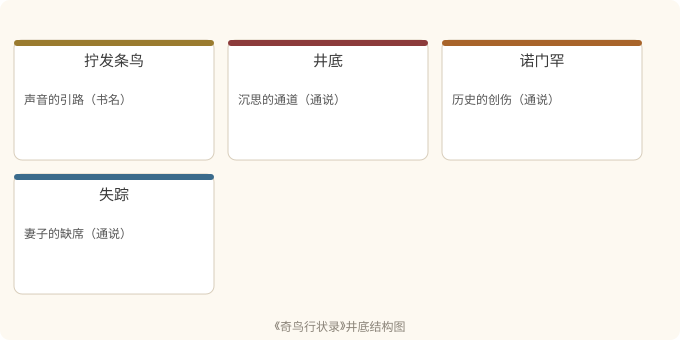

奇鸟行状录
一、基本信息
| 作者 | 村上春树 |
|---|---|
| 成书/出版 | 1994-95年（作者页注记：Britannica——奇鸟行状录（1994—95）） Haruki Murakami — Encyclopaedia Britannica（百科全书） |
| 国别/地区 | 日本 |
| 时代 | 现当代 · 20世纪90年代 |
| 体裁 | 长篇小说 |
| 语言 | 日语 |

《奇鸟行状录》井底结构图（主题·结构图）
二、创作背景
作者页注记：奇鸟行状录——'（Britannica 列举 1994—95）'。
Britannica：村上春树——当代日本作家（作者页语境）。
题材（通说待核）：冈田亨与拧发条鸟——井底的沉思与诺门罕战役的阴影。
三、内容脉络
（通说待核）妻子的失踪与拧发条鸟的叫声。
（通说待核）诺门罕的历史地狱与井下的通道。
四、主要人物表
| 人物 | 身份 | 说明 |
|---|---|---|
| 冈田亨 | 失业者 | （通说待核，Britannica未载） |
| 久美子 | 妻子 | （通说待核） |
五、主题与艺术特点
- 历史创伤的通道（通说待核）。
- '拧发条鸟'的声音（书名语境——通说待核）。
- 从都市独白到历史叙事（作者页语境）。
六、影响与评论
- Britannica：奇鸟行状录 (1994-95)（作者页注记）。
Haruki Murakami — Encyclopaedia Britannica（百科全书） - Britannica：《挪威的森林》为代表作（作者页交叉）。
Haruki Murakami — Encyclopaedia Britannica（百科全书）
七、阅读建议
难点
- 三部结构（日语三卷说）。
- 诺门罕战役史。
- 《奇鸟行状录》中译本（上海译文等——通说待核）。
- 日文原版。
村上中期首选；与《海边的卡夫卡》对读。
八、待核实
- 冈田亨/久美子人名核对（通说）。
- 三卷年份（1994/1995）核对。
- '拧发条鸟'意象细节待核。